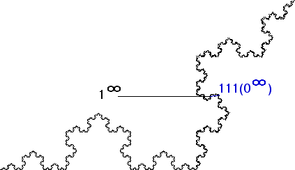

| 8.(d) Consider the point 1infinity. |
| To show this point has no tangent, we shall produce a sequence of points converging to this point, with the chords winding round and round 1infinity. |
|  |
| Next, consider the chord between the point 1infinity and the point 111(0infinity). |
| Now the pattern should be clear: the sequence of points 1k(0infinity) converges to the point 1infinity, and as k increases the chord from 1k(0infinity) to 1infinity winds round and round. |
Return to Address questions.